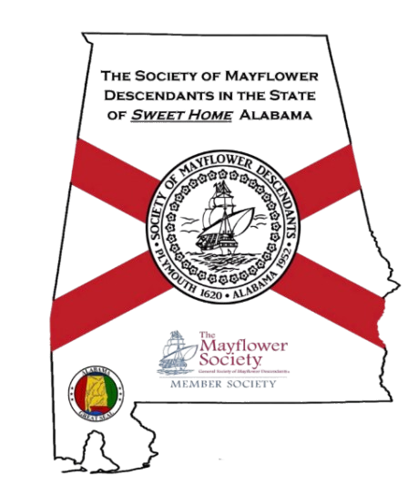

Proud member society of the General Society of Mayflower Descendants
Below is the full list of the 26 Mayflower passenger families GSMD identifies as having documented descendants, with the spouse married to each passenger. This is names only - no dates - and covers only the marriage(s) that connect directly to the passenger. If a passenger's spouse survived them and later remarried someone who was not a Mayflower passenger, that later marriage is not included here, since it does not carry the passenger's own Mayflower descent.
John Alden - married Priscilla Mullins (fellow Mayflower passenger)
Isaac Allerton - married Mary Norris
Mary (Norris) Allerton - married Isaac Allerton
Bartholomew Allerton - married Margaret, later Sarah Fairfax
Mary Allerton - married Thomas Cushman
Remember Allerton - married Moses Maverick
John Billington - married Elinor
Elinor Billington - married John Billington
Francis Billington - married Christian (Penn) Eaton
William Bradford - married Dorothy May, later Alice (Carpenter) Southworth
William Brewster - married Mary
Mary Brewster - married William Brewster
Love Brewster - married Sarah Collier
Peter Browne - married Martha (Ford), later Mary
James Chilton - wife's name not recorded
Mrs. James Chilton - married James Chilton
Mary Chilton - married John Winslow (arrived on the Fortune, brother of Mayflower passengers Edward and Gilbert Winslow)
Francis Cooke - married Hester Mahieu
John Cooke - married Sarah Warren (daughter of fellow passenger Richard Warren)
Edward Doty - married a first wife whose name is not recorded, later Faith Clarke
Francis Eaton - married Sarah, later Dorothy, later Christian Penn
Samuel Eaton - married Elizabeth, later Martha Billington (fellow passenger's daughter)
Sarah Eaton - married Francis Eaton
Moses Fletcher - married Mary Evans, later Sarah Denby (traveled alone on the Mayflower; neither wife made the voyage)
Edward Fuller - wife's name not recorded
Mrs. Edward Fuller - married Edward Fuller
Samuel Fuller (son of Edward) - married Jane Lothrop
Samuel Fuller - married Alice Glascock, later Agnes Carpenter, later Bridget Lee
Stephen Hopkins - married Mary Kent, later Elizabeth Fisher
Elizabeth (Fisher) Hopkins - married Stephen Hopkins
Constance Hopkins - married Nicholas Snow
Giles Hopkins - married Katherine Whelden
John Howland - married Elizabeth Tilley (fellow Mayflower passenger)
Richard More - married Christian Hunt, later Jane Crumton
William Mullins - married Alice
Priscilla Mullins - married John Alden (fellow Mayflower passenger)
Degory Priest - married Sarah Allerton (sister of fellow passenger Isaac Allerton)
Thomas Rogers - married Alice Cosford (did not emigrate)
Joseph Rogers - married a wife whose name at marriage is unknown; later records name her Hannah
Henry Samson - married Ann Plummer
George Soule - married Mary Bucket
Myles Standish - married Rose, later Barbara
John Tilley - married Joan Hurst
Joan (Hurst) Tilley - married John Tilley
Elizabeth Tilley - married John Howland (fellow Mayflower passenger)
Richard Warren - married Elizabeth Walker
William White - married Susanna Jackson
Susanna (Jackson) White - married William White, later Edward Winslow (fellow Mayflower passenger, after William's death)
Resolved White - married Judith Vassall, later Abigail Lord
Peregrine White - married Sarah Bassett
Edward Winslow - married Elizabeth Barker, later Susanna (Jackson) White (fellow Mayflower passenger, widow of William White)